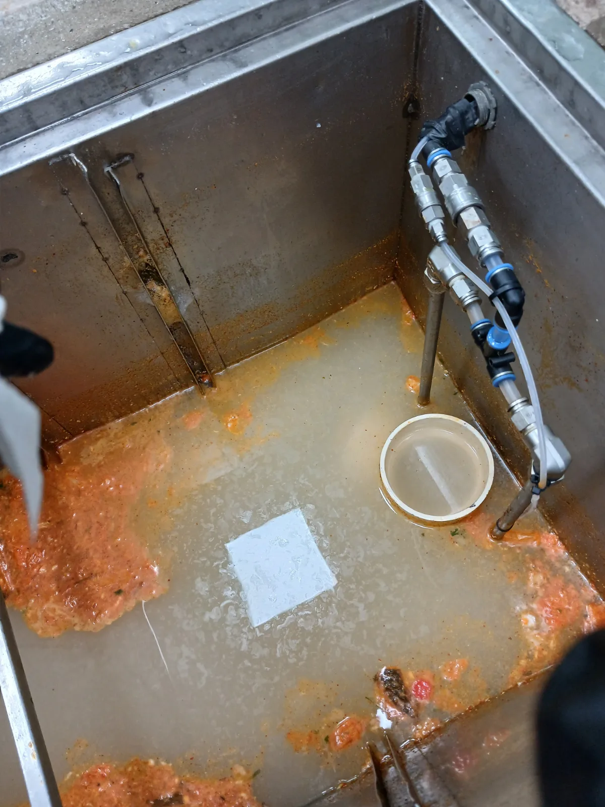

구리시 수택동 하수구막힘, 현장 도착 후 진단
경기도 구리시 수택동에 위치한 학교 급식실에서 주방 하수구의 배수가 원활하지 않다는 요청을 받고 내시경·샤프트·고압세척 장비를 준비해 현장으로 이동했습니다.
학교 급식실은 정해진 시간에 많은 양의 식재료를 손질하고 조리와 설거지를 진행합니다. 일반 가정보다 물과 기름의 사용량이 많아 주방 하수구막힘이 발생하면 급식 운영과 위생 관리에 직접적인 영향을 줄 수 있습니다.
현장에 도착해 급식실 바닥 트렌치와 배수시설, 연결 배관의 구조를 차례대로 점검했습니다. 배수시설 내부에는 주황빛의 기름 슬러지와 음식물 찌꺼기가 넓게 쌓여 있었으며, 배관 내시경 화면에서도 내부 벽면에 오염물이 달라붙어 배수 공간이 좁아진 상태가 확인됐습니다.
부분적인 관통만으로 해결할 수 있는 단순 막힘이 아니라 배수시설과 연결 배관을 함께 정비해야 하는 규모가 큰 현장이었습니다.
1단계: 증상 확인과 필요한 장비 작업
먼저 급식실 바닥에 설치된 배수시설을 개방하고 배관 내시경을 투입해 내부 상태를 확인했습니다. 막힘 구간과 배관 구조를 파악한 뒤 굳은 기름때를 제거하기 위해 전문 샤프트 장비를 투입했습니다.
회전하는 샤프트 헤드가 배관 내벽에 단단하게 붙은 유지방과 음식물 슬러지를 분쇄할 수 있도록 구간을 나누어 반복 작업했습니다. 배관 손상을 방지하기 위해 장비의 진입 상태와 작업 반응을 확인하며 강도와 진행 방향을 조절했습니다.
학교 급식실처럼 배수량이 많은 현장은 배관 가운데에 작은 물길만 만드는 단순 관통으로는 부족합니다. 배관 내벽에 기름층이 남으면 음식물 찌꺼기가 다시 달라붙어 하수구막힘이 빠르게 재발할 수 있기 때문입니다.

2단계: 원인 구간 처리와 정상 작동 확인
샤프트로 굳은 기름 스케일을 잘게 분쇄한 뒤 고압세척 작업을 이어서 진행했습니다. 급식실 배수시설과 연결 배관에 고압세척 호스를 투입해 강한 수압으로 배관 내부에 남아 있던 기름 슬러지와 음식물 찌꺼기를 밀어냈습니다.
작업자는 여러 배수 지점과 점검구를 오가며 세척 범위를 넓혔습니다. 샤프트 작업이 굳은 기름층을 분쇄하는 역할을 했다면, 고압세척은 분리된 오염물을 배관 밖으로 배출하고 내부를 세척하는 역할을 담당했습니다.
두 장비를 복합적으로 운용해 배수시설 한 곳만 임시로 뚫는 데 그치지 않고 급식실 주방 하수배관의 전체적인 흐름을 정비했습니다.

작업 결과와 재발 방지 안내
배관 내벽의 굳은 유지방을 샤프트로 분쇄하고 고압세척으로 남은 기름 슬러지와 음식물 찌꺼기를 씻어내 급식실 주방의 배수 흐름을 확보했습니다.
학교 급식실은 매일 많은 양의 조리와 설거지가 반복되므로 기름때가 다시 쌓일 가능성이 높습니다. 조리 후 발생한 폐유는 하수구에 직접 버리지 말고 별도로 처리해야 하며, 음식물 찌꺼기가 배수시설로 유입되지 않도록 거름망과 집수시설을 주기적으로 청소해야 합니다.
배수 속도가 느려지거나 악취와 물고임이 나타날 때는 완전히 막힐 때까지 기다리지 말고 배관 내시경검사와 정기적인 배관세척을 진행하는 것이 좋습니다.
신라건축설비는 구리시 수택동을 비롯한 경기권과 서울 전 지역의 학교·식당·상가 주방 하수구막힘에 신속하게 출동합니다. 배관 내시경검사, 석션, 관통, 샤프트 배관스케일링과 고압세척을 현장 상태에 맞춰 복합적으로 운용합니다. 생활 하수구막힘부터 학교 급식실과 대형 주방, 공용배관·메인 하수관·오수관 및 대형 배관공사까지 진단부터 작업까지 자체적으로 대응합니다.
최종 조치: 배관 내시경으로 내부 오염 상태와 막힘 구간을 확인한 뒤 샤프트 작업으로 굳은 기름 스케일을 분쇄했습니다. 이후 고압세척을 진행해 배관과 배수시설 내부에 남은 기름 슬러지와 음식물 찌꺼기를 씻어내고 배수 흐름을 확보했습니다.
현장 방문 전 확인하는 비용과 작업 범위
신라건축설비는 현장 증상과 배관 구조를 확인한 뒤 필요한 작업과 예상 비용을 안내합니다. 단순 관통으로 해결되는지, 배관내시경·석션·고압세척 또는 추가 장비가 필요한지는 현장 상태에 따라 달라집니다. 출장비와 야간 작업비, 추가 장비 비용이 발생할 수 있는 경우 작업 전에 먼저 설명하고 동의를 받은 범위에서 진행합니다.
업체를 선택할 때 확인할 사항
무조건적인 ‘0원’ 표현보다 실제 작업 범위, 추가 비용 조건, 사용 장비와 사후 대응 기준을 확인하는 것이 중요합니다. 해결되지 않았을 때의 비용 기준과 작업 후 동일 증상 발생 시 점검 범위를 사전에 문의해두면 불필요한 분쟁을 줄일 수 있습니다.
구리시 하수구막힘 자주 묻는 질문
여러 배수구가 동시에 역류하면 공용배관 문제인가요?
학교 급식실 주방의 하수구와 배수시설에서 물이 원활하게 빠지지 않았으며, 많은 양의 물을 사용하면 배수가 지연되는 증상이 나타났습니다.처럼 증상이 나타나더라도 원인은 현장마다 다를 수 있습니다. 장비와 배관 구조를 확인한 뒤 필요한 작업 범위를 안내합니다.
고압세척이 항상 필요한가요?
작업 전 증상과 현장 여건을 확인해 예상 범위와 비용을 먼저 안내합니다. 변기 탈거, 장비 추가 투입 또는 공용배관 작업이 필요한 경우 고객 동의 없이 임의로 진행하지 않습니다.
작업 전 추가 비용을 확인할 수 있나요?
완료 후 정상 작동을 함께 확인하고 작업 범위에 따른 사후 안내를 드립니다. 동일 증상이 반복되면 현장 기록을 기준으로 원인을 다시 점검합니다.
하수구막힘 서울·경기 출동지역
신라건축설비는 구리시 수택동 현장을 포함해 서울 25개 구와 경기도 31개 시·군의 배관 문제를 상담합니다. 현장 거리와 기사 배정 상황에 따라 출동 가능 여부를 먼저 안내드립니다.
서울 전 지역
강남구 · 강동구 · 강북구 · 강서구 · 관악구 · 광진구 · 구로구 · 금천구 · 노원구 · 도봉구 · 동대문구 · 동작구 · 마포구 · 서대문구 · 서초구 · 성동구 · 성북구 · 송파구 · 양천구 · 영등포구 · 용산구 · 은평구 · 종로구 · 중구 · 중랑구
경기도 주요 출동지역
수원시 · 용인시 · 고양시 · 화성시 · 성남시 · 부천시 · 남양주시 · 안산시 · 평택시 · 안양시 · 시흥시 · 파주시 · 김포시 · 의정부시 · 광주시 · 하남시 · 광명시 · 군포시 · 양주시 · 오산시 · 이천시 · 안성시 · 구리시 · 의왕시 · 포천시 · 양평군 · 여주시 · 동두천시 · 과천시 · 가평군 · 연천군